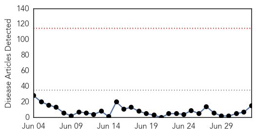
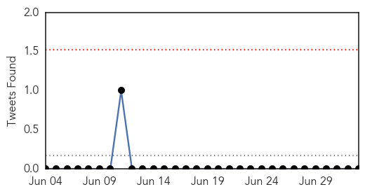
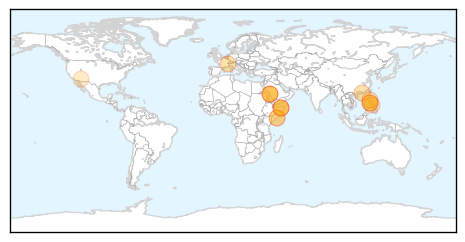
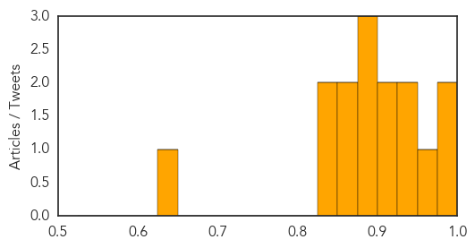
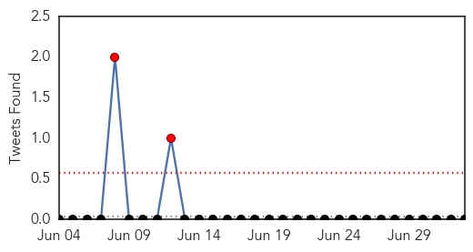

MERS
30-Day Web Trend
0 alerts, 0 warnings

30-Day Twitter Trend
0 alerts, 0 warnings

Article Locations
Article Confidences
Top Articles:
- 0.997
- Patient with respiratory symptom and travel history under CHP investigation
- 0.993
- UN: MERS deadly but most cases are preventable
- 0.964
- Manila urges Muslims to delay Hajj due to MERS
- 0.940
- Filipino Muslims urged to abort Mecca trip due to MERS virus
- 0.937
- Pinoy Muslims urged to defer Hajj pilgrimage
- 0.924
- Philippines urges Muslim pilgrims to postpone Mecca pilgrimage because of MERS virus
- 0.916
- Saudi Camel Ban Would Decimate Somalia's Economy
- 0.898
- Hajj pilgrimage to Mecca requires medical clearance
- 0.886
- Philippines: DOH advises against Filipino Muslims travel to Hajj due to MERS
- 0.884
- Somalia says any Saudi camel import ban would hurt economy
- 0.866
- Saudi camel ban would hurt economy, says Somalia
- 0.853
- DOH asks Hajj pilgrims to postpone travel due to MERS-CoV
- 0.848
- any Saudi camel import ban would hurt economy
- 0.828
- Somalia says any Saudi camel import ban would hurt economy
- 0.648
- Swine virus causing nationwide hog shortage turns up in Arizona
Top Tweets:
-
No tweets found for Jul 03, 2014
Swine Flu
30-Day Web Trend
0 alerts, 0 warnings

30-Day Twitter Trend
2 alerts, 0 warnings

Article Locations

Article Confidences

Top Articles:
- 0.996
- A possible public health crisis from detention centers.
- 0.907
- Scientist creates 'invincible' strain of H1N1 flu
- 0.864
- 2 Cases of swine flu detected in immigrant children
- 0.860
- 2 Cases of swine flu detected in immigrant children
- 0.855
- Reports Show Central American Immigrant Children Show Desperate Need for Healthcare, Mental Health Treatment
- 0.847
- Two Cases of Swine Flu Detected in Immigrant Children
Top Tweets:
-
No tweets found for Jul 03, 2014